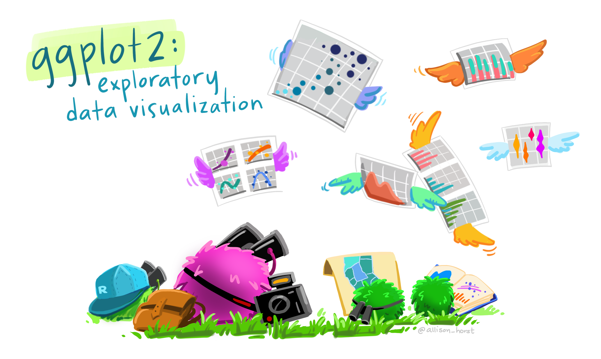

ggplot(
data = penguins,
mapping = aes(x = bill_length_mm,
y = bill_depth_mm,
color = species)) +
geom_point() +
theme_bw()
Combined Melbourne R User and Statistical Society of Australia-VIC Meeting, 5 Aug 2025

INSERT IMAGE
# source(here::here("_utilities/travel_dates_load.R"))
library(ggplot2)
library(ggiraph)
## ---- daily-loc-prep ----
## expand dates: https://stackoverflow.com/a/54728153
travel_days <- travel_dates |>
mutate(nights = interval(startDate, endDate) / days(1)) |>
arrange(startDate, desc(nights)) |>
rowid_to_column() |>
rowwise() |>
reframe(rowid, location, details, nights,
date = seq(startDate, endDate, by = "day")
) |>
group_by(date) |>
slice_min(order_by = nights, n = 1) |>
ungroup() |>
mutate(country = countrycode::countryname(location, "iso2c"))
away_days <- travel_days |>
summarise(
startDate = min(date),
endDate = max(date)
) |>
mutate(rowid = 0, location = "TBC") |>
reframe(rowid, location, date = seq(startDate, endDate, by = "day"))
daily_loc <- away_days |>
anti_join(travel_days, by = "date") |>
bind_rows(travel_days) |>
mutate(
flag = countrycode::countrycode(country, "iso2c", "unicode.symbol"),
continent = countrycode::countrycode(country, "iso2c", "continent")
) |>
mutate(flag = case_when(
location == "en route" ~ "\u2708",
location == "TBC" ~ "❔",
TRUE ~ flag
))
## ---- prep-full-calendar-data ----
# based on: https://github.com/nrennie/tidytuesday/blob/9dbe69d696f6c1edad41a72d157a42f3b5a63a81/2023/2023-03-07/20230307.R
# calculate extra months to make plot rectangular
cal_ncol <- 3
startMonth <- month(floor_date(min(travel_days$date), "month"))
endMonth <- month(ceiling_date(max(travel_days$date), "month") - 1)
n_extra_month <- cal_ncol - ((endMonth - startMonth + 1) %% cal_ncol)
padding_days <- summarise(
travel_days,
startDate = floor_date(min(date), "month"),
endDate = ceiling_date(max(date) %m+% months(n_extra_month), "month") - 1
) |>
reframe(date = seq(startDate, endDate, by = "day"))
# prepare calendar data
full_calendar <- padding_days |>
anti_join(daily_loc, by = "date") |>
bind_rows(daily_loc) |>
mutate(
Year = year(date),
Month = month(date, label = TRUE),
Day = wday(date, label = TRUE, week_start = 1),
mday = mday(date),
Month_week = (5 + day(date) +
wday(floor_date(date, "month"), week_start = 1)) %/% 7
)
## ---- travel-dates-calendar-display ----
base_data_aes <- full_calendar |>
ggplot(aes(x = Day, y = Month_week))
layers_geom_text <- list(
geom_text(aes(label = mday), nudge_y = 0.25),
geom_text(aes(label = flag), nudge_y = -0.25)
)
layers_scale_coord <- list(
scale_y_reverse(),
coord_fixed(expand = TRUE)
)
layers_facet_labs <- list(
facet_wrap(vars(Month),
ncol = cal_ncol
),
labs(y = NULL, x = NULL)
)
layers_theme <- list(
theme_bw(),
theme(
plot.margin = margin(0, 0, 0, 0),
panel.grid.major = element_blank(),
panel.grid.minor = element_blank(),
# panel.spacing = unit(0, "lines"),
panel.border = element_blank(),
axis.ticks = element_blank(),
axis.text.y = element_blank(),
strip.background = element_rect(fill = "grey95"),
strip.text = element_text(hjust = 0)
)
)
## ---- tooltip-travel-calendar ----
p_cal_girafe <- base_data_aes +
geom_tile_interactive(
aes(
tooltip = paste(details, "@", location),
data_id = location
),
alpha = 0.2,
fill = "transparent",
colour = "grey80"
) +
layers_geom_text +
layers_scale_coord +
coord_fixed(expand = FALSE) +
layers_facet_labs +
layers_theme
# girafe(ggobj = p_cal_girafe)copy paste icon + yuck emoji
💡 Useful if components are exactly the same each time!
IMAGE/ILLUSTRATION – ggplot -> helper
ggweekly::ggweek_planner(
start_day = lubridate::today(),
end_day = start_day +
lubridate::weeks(8) - lubridate::days(1),
highlight_days = NULL,
week_start = c("isoweek", "epiweek"),
week_start_label = c("month day", "week", "none"),
show_day_numbers = TRUE,
show_month_start_day = TRUE,
show_month_boundaries = TRUE,
highlight_text_size = 2,
month_text_size = 4,
day_number_text_size = 2,
month_color = "#f78154",
day_number_color = "grey80",
weekend_fill = "#f8f8f8",
holidays = ggweekly::us_federal_holidays,
font_base_family = "PT Sans",
font_label_family = "PT Sans Narrow",
font_label_text = NULL
)get example ggweekly
calendR(
year = format(Sys.Date(), "%Y"),
month = NULL,
from = NULL,
to = NULL,
start = c("S", "M"),
orientation = c("portrait", "landscape"),
title,
title.size = 20,
title.col = "gray30",
subtitle = "",
subtitle.size = 10,
subtitle.col = "gray30",
text = NULL,
text.pos = NULL,
text.size = 4,
text.col = "gray30",
special.days = NULL,
special.col = "gray90",
gradient = FALSE,
low.col = "white",
col = "gray30",
lwd = 0.5,
lty = 1,
font.family = "sans",
font.style = "plain",
day.size = 3,
days.col = "gray30",
weeknames,
weeknames.col = "gray30",
weeknames.size = 4.5,
week.number = FALSE,
week.number.col = "gray30",
week.number.size = 8,
monthnames,
months.size = 10,
months.col = "gray30",
months.pos = 0.5,
mbg.col = "white",
legend.pos = "none",
legend.title = "",
bg.col = "white",
bg.img = "",
margin = 1,
ncol,
lunar = FALSE,
lunar.col = "gray60",
lunar.size = 7,
pdf = FALSE,
doc_name = "",
papersize = "A4"
)Sometimes
“saved” lines of code
turn into
confusing lists of plot specific arguments
ggdibbler / ggtime / sf
Grammatical default inputs
Modular internals
Grammatical customisation
# source(here::here("_utilities/travel_dates_load.R"))
library(ggplot2)
library(ggiraph)
## ---- daily-loc-prep ----
## expand dates: https://stackoverflow.com/a/54728153
travel_days <- travel_dates |>
mutate(nights = interval(startDate, endDate) / days(1)) |>
arrange(startDate, desc(nights)) |>
rowid_to_column() |>
rowwise() |>
reframe(rowid, location, details, nights,
date = seq(startDate, endDate, by = "day")
) |>
group_by(date) |>
slice_min(order_by = nights, n = 1) |>
ungroup() |>
mutate(country = countrycode::countryname(location, "iso2c"))
away_days <- travel_days |>
summarise(
startDate = min(date),
endDate = max(date)
) |>
mutate(rowid = 0, location = "TBC") |>
reframe(rowid, location, date = seq(startDate, endDate, by = "day"))
daily_loc <- away_days |>
anti_join(travel_days, by = "date") |>
bind_rows(travel_days) |>
mutate(
flag = countrycode::countrycode(country, "iso2c", "unicode.symbol"),
continent = countrycode::countrycode(country, "iso2c", "continent")
) |>
mutate(flag = case_when(
location == "en route" ~ "\u2708",
location == "TBC" ~ "❔",
TRUE ~ flag
))
## ---- prep-full-calendar-data ----
# based on: https://github.com/nrennie/tidytuesday/blob/9dbe69d696f6c1edad41a72d157a42f3b5a63a81/2023/2023-03-07/20230307.R
# calculate extra months to make plot rectangular
cal_ncol <- 3
startMonth <- month(floor_date(min(travel_days$date), "month"))
endMonth <- month(ceiling_date(max(travel_days$date), "month") - 1)
n_extra_month <- cal_ncol - ((endMonth - startMonth + 1) %% cal_ncol)
padding_days <- summarise(
travel_days,
startDate = floor_date(min(date), "month"),
endDate = ceiling_date(max(date) %m+% months(n_extra_month), "month") - 1
) |>
reframe(date = seq(startDate, endDate, by = "day"))
# prepare calendar data
full_calendar <- padding_days |>
anti_join(daily_loc, by = "date") |>
bind_rows(daily_loc) |>
mutate(
Year = year(date),
Month = month(date, label = TRUE),
Day = wday(date, label = TRUE, week_start = 1),
mday = mday(date),
Month_week = (5 + day(date) +
wday(floor_date(date, "month"), week_start = 1)) %/% 7
)
## ---- travel-dates-calendar-display ----
base_data_aes <- full_calendar |>
ggplot(aes(x = Day, y = Month_week))
layers_geom_text <- list(
geom_text(aes(label = mday), nudge_y = 0.25),
geom_text(aes(label = flag), nudge_y = -0.25)
)
layers_scale_coord <- list(
scale_y_reverse(),
coord_fixed(expand = TRUE)
)
layers_facet_labs <- list(
facet_wrap(vars(Month),
ncol = cal_ncol
),
labs(y = NULL, x = NULL)
)
layers_theme <- list(
theme_bw(),
theme(
plot.margin = margin(0, 0, 0, 0),
panel.grid.major = element_blank(),
panel.grid.minor = element_blank(),
# panel.spacing = unit(0, "lines"),
panel.border = element_blank(),
axis.ticks = element_blank(),
axis.text.y = element_blank(),
strip.background = element_rect(fill = "grey95"),
strip.text = element_text(hjust = 0)
)
)
## ---- tooltip-travel-calendar ----
p_cal_girafe <- base_data_aes +
geom_tile_interactive(
aes(
tooltip = paste(details, "@", location),
data_id = location
),
alpha = 0.2,
fill = "transparent",
colour = "grey80"
) +
layers_geom_text +
layers_scale_coord +
coord_fixed(expand = FALSE) +
layers_facet_labs +
layers_theme
# girafe(ggobj = p_cal_girafe)![screenshot of interactive calendar plot]
gg_facet_wrap_months(
## --- data ----
.events_long,
date_col,
locale = NULL,
## --- facets / layout ----
week_start = NULL,
nrow = NULL,
ncol = NULL,
## --- default layers ---
.geom = list(
geom_tile(color = "grey70", fill = "transparent"),
geom_text(nudge_y = 0.25)
),
.scale_coord = list(
scale_y_reverse(),
scale_x_discrete(position = "top"),
coord_fixed(expand = TRUE)),
.theme = list(theme_bw_tilecal()),
.other = list()
)gg_facet_wrap_months <- function(...){
## Data Helpers
cal_data <- .events_long |>
fill_missing_units({{ date_col }}) |>
calc_calendar_vars({{ date_col }})
## Plot Construction
base_plot <- cal_data |>
ggplot2::ggplot(mapping = aes_string(
x = "TC_wday_label",
y = "TC_month_week",
label = "TC_mday"
)) +
facet_wrap(c("TC_month_label"), axes = "all_x", nrow = nrow, ncol = ncol) +
labs(y = NULL, x = NULL) +
.geom +
.scale_coord +
.theme +
.others
base_plot
}library(ggplot2)
library(ggtilecal)
make_empty_month_days(c("2024-01-05", "2024-06-30")) |>
gg_facet_wrap_months(
unit_date,
.geom = list(
geom_tile(color = "grey70",
fill = "transparent"),
geom_text(nudge_y = 0.25,
color = "#6a329f")),
.theme = list(
theme_bw_tilecal(),
theme(strip.background = element_rect(fill = "#d9d2e9")))
)# remotes::install_github("cynthiahqy/ggtilecal")
library(ggiraph)
library(ggplot2)
library(ggtilecal)
gi <- demo_events_gpt |>
reframe_events(startDate, endDate) |>
gg_facet_wrap_months(unit_date) +
geom_text(aes(label = event_emoji), nudge_y = -0.25, na.rm = TRUE) +
geom_tile_interactive(
aes(
tooltip = paste(event_title),
data_id = event_id
),
alpha = 0.2,
fill = "transparent",
colour = "grey80"
)
girafe(ggobj = gi)